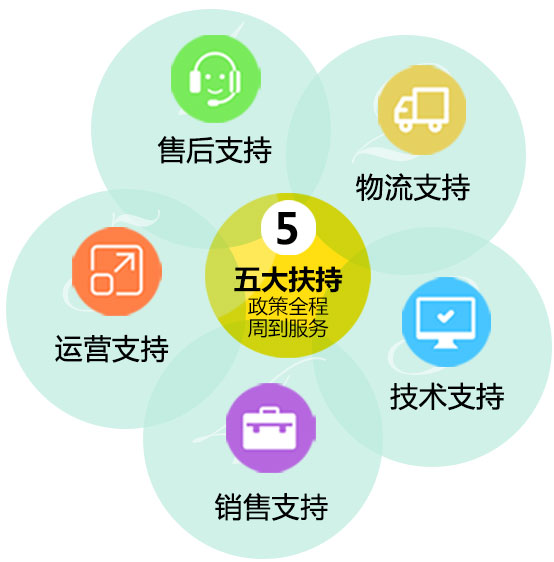

- 无需
经验 - 无需
技术 - 无需
店面 - 无需
货源
多方盈利
超强吸粉
多方盈利
超强吸粉
为您量身开辟专属挣钱通道
微信互动机助力传统
微商挣脱营销瓶颈
结合有八亿用户的微信，新型互动体验，流量、订单自来。
未莱最强大专业团队为您护航，让您一台电脑、一部手机即可在家办公。
未莱拥有上万正规厂家商品组成的庞大分销系统让您轻松获得巨额分销佣金。
互动机后台通过对信息的数据化管理，采用智能化计算和核对，精准确定目标消费群体，无误营销。
网络销售渠道与传统销售渠道相比，环节减少流程更精简，很大程度提升了工作效率。
为持续成长创造源源不断的动力
